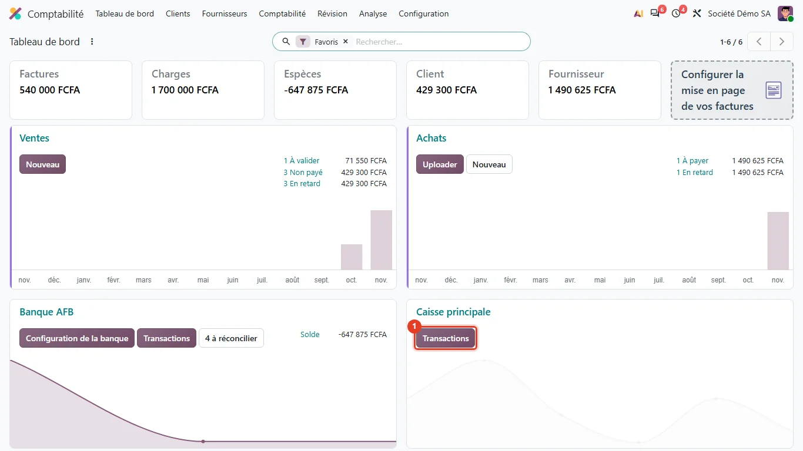
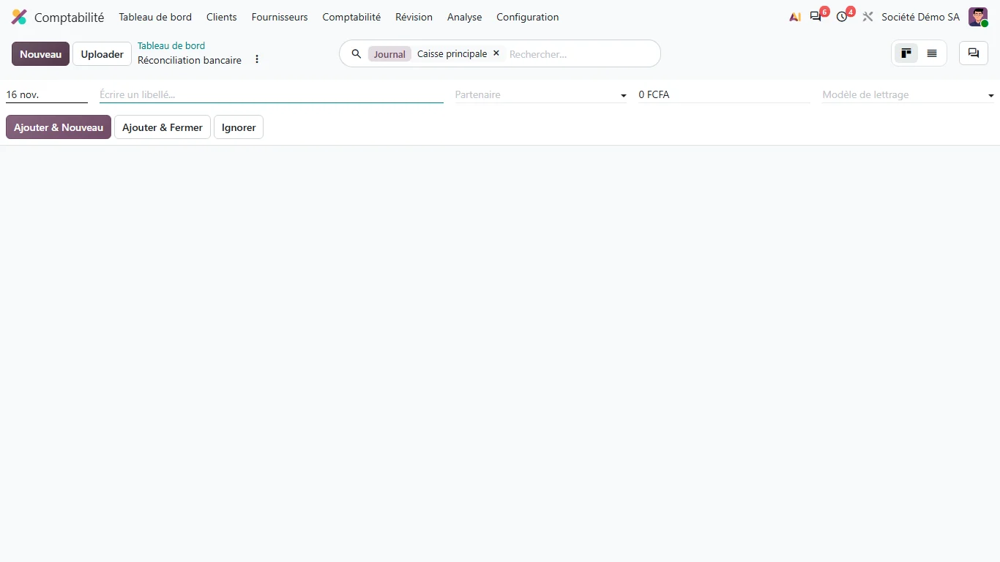

Enregistrer une dépense de caisse et arrêter la caisse
Objectif. Enregistrer chaque sortie d'espèces et faire concorder la caisse avec le comptage.
Menu Odoo 15Comptabilité > Tableau de bord (carte de la caisse)
Étapes
- Sur la carte de la caisse, cliquez sur Transactions (1), puis Nouveau.
- Saisissez la date, le libellé, le montant en négatif pour une sortie, et le partenaire s'il y en a un.
- Choisissez le compte de charge, puis validez.
- En fin de journée, comptez les espèces et comparez au solde de la caisse dans Odoo.
- Tout écart est signalé au responsable avant d'être comptabilisé.


À vérifier
- Solde Odoo de la caisse = espèces comptées.
- Chaque sortie a sa pièce justificative.
À éviter
- N'utilisez pas la caisse d'un collègue.
Exercice
Saisissez une dépense de 15 000 et contrôlez le solde de la caisse.